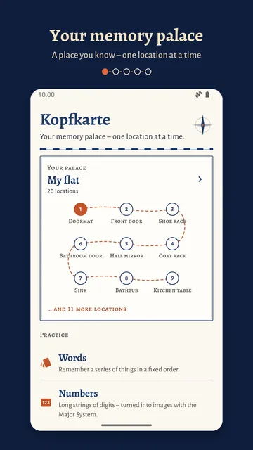
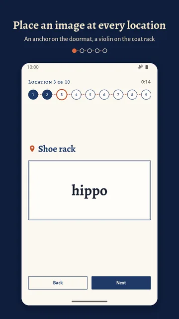
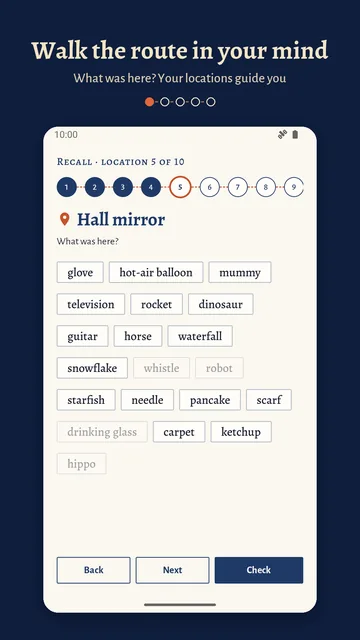
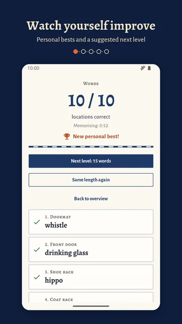
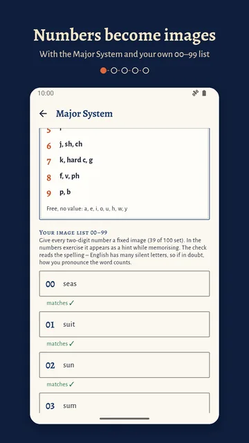
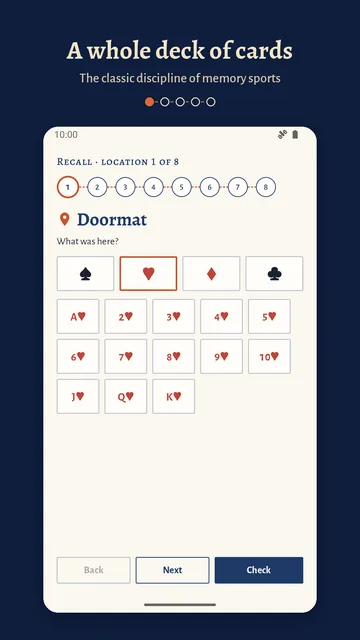
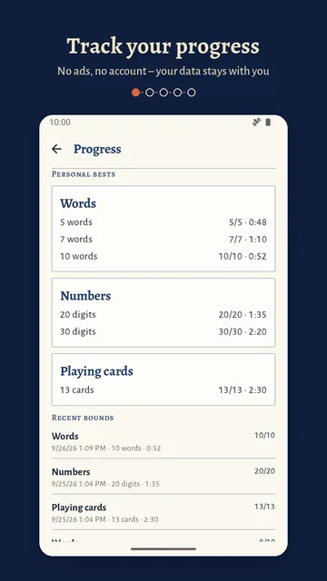

Words
Remember a series of things in a fixed order – all easy to picture, from anchor to zebra. The app comes with 380 words.
Memory training with the method of loci
German for “map in your head”. Your memory palace – one location at a time: pick a place you know by heart, place an image at each location and later walk the route again in your mind.
For Android phones and tablets, in English and German.
This is what a palace looks like in Kopfkarte: a place you know, with locations in a fixed order. In the app you place an image at each location and then walk the route again in your mind.
Pick a place you know by heart – your home, your way to work – and list its locations in a fixed order: doormat, front door, coat rack …
Place an image at each location: the anchor lies on the doormat, the violin hangs from the coat rack. At your own pace with a stopwatch, or timed.
Walk the route again in your mind: “What was here?” Tap your answer – for words among just as many distractors, so it stays honest.
Remember a series of things in a fixed order – all easy to picture, from anchor to zebra. The app comes with 380 words.
Long strings of digits turned into images with the Major System. With a reference table and your own 00–99 image list that checks whether your word fits the number.
A shopping list, the outline of a talk, the planets, vocabulary – practise them on your palace just like the other exercises.
The order of a shuffled deck, the classic discipline of memory sports. To recall, you pick the suit first, then the value.
Plus: personal bests per length with memorising time, a history of recent rounds and a suggested next level. Long rounds need many locations – 52 hold a whole deck of cards.







The method of loci is more than two thousand years old. Cicero tells of the poet Simonides: after a banquet hall collapsed, he could name the dead because he remembered where each of them had sat. From this, Cicero draws the rule: places in a fixed order, on which you lay images.1
Memory athletes still work with places today. A study of competitors at events such as the World Memory Championships found that their performance was not down to exceptional intelligence or differently built brains, but to a spatial learning strategy.2
Kopfkarte does not promise you a better memory. It gives you a place to practise and shows you honestly how many locations you got right.
You’ve heard of the memory palace and want to know what it feels like. Start with the example palace and five words.
The outline of a presentation, a set of technical terms, vocabulary: add them as your own list and walk through them on your palace.
Numbers with the Major System and your own image list, a whole deck of cards, personal bests with times – for training, round by round.
0 €
2.99 €
No ads, no subscription, no account. Your palaces, lists and results stay on your device. Price in Germany, as of October 2026. The price Google Play shows at checkout is what counts.
No. Palaces, words and exercises are all in the app and on your device.
No, Kopfkarte is only available for Android phones and tablets.
No sign-up, no account, no ads, no trackers. Your palaces, lists and results stay on your device. The details are in the privacy policy (in German).
Not if Android backup or the data transfer when switching phones is turned on: your palaces, lists, image list and history come along.
No. You start with five words; after each round the app suggests a length – one level up if you got everything right, one level down if fewer than 60 percent of the locations were right.
English and German. You can switch the language in the settings; the words and the Major System are available in both languages.
Write to us at kontakt@wunderkammer-apps.de.
Kopfkarte is now available on Google Play.